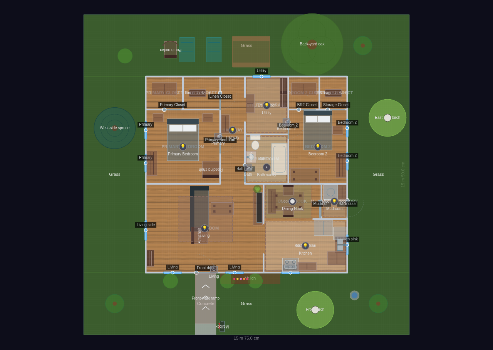
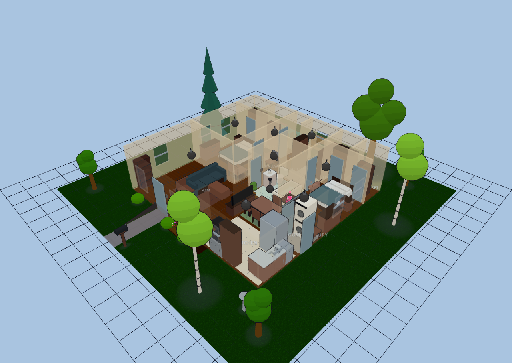
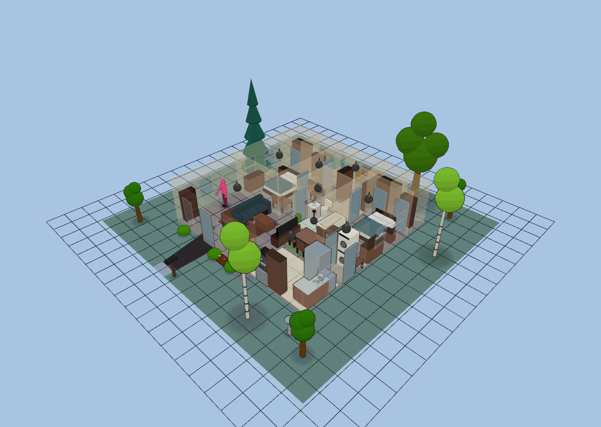

Bungalow — Cottage + Yard
Explore it live above, or import the JSON in Diorama under Settings ▸ Data ▸ Configurations ▸ Import.
~997 sq ft (92.6 m²) interior · 1 floor · 13 rooms + landscaped yard
The Small 2-Bed Bungalow re-skinned as a cozy cottage and set on its own lot.
The house itself is identical — front living room, galley kitchen open to an
interior breakfast nook and back mudroom, and a two-bedroom private wing off a
central hallway — but dressed in a warmer palette (deeper honey-oak floors, warm
cream walls) and surrounded on all four sides by a 3-metre yard. A grass lawn
wraps the house; a concrete front walk runs from the front door out to the
street; a mulch foundation bed lines the front wall with bushes and a flower bed;
trees anchor the corners, a bird bath sits in the front lawn, and the back yard
has two lawn chairs and a picnic table for outdoor dining.
Interior (unchanged from the base bungalow):
Living Room: sofa + TV wall, armchair, coffee table, bookshelf, seating rug, plant.
Kitchen: galley run (sink, dishwasher, fridge, stove + microwave, counter, cabinets).
Dining Nook: interior 4-seat breakfast table with bench.
Mudroom / Laundry: washer + dryer, boot bench.
Primary Bedroom: queen bed, nightstands, dresser, reading chair; own closet.
Bathroom: toilet, vanity, tub. Utility / Storage: shelving + walk-through to Bedroom 2.
Bedroom 2: full bed, nightstand, desk, dresser; reach-in + storage closets.
Yard:
• Grass lawn wrapping the house on all four sides.
• Concrete front walk from the front door to the street.
• Mulch foundation bed along the front wall with two bushes and a flower bed;
a fourth bush west of the walk.
• Two shade trees at the front corners, one at the back; a front-lawn bird bath.
• Back-yard picnic table with two lawn chairs for outdoor dining.
Yard additions: a back-yard oak, a west-side spruce and two birches (front and east),
a curbside mailbox, a step-free ramp up the front walk, and a porch rocker on the
back lawn.
Cottage + Yard
13 rooms · 244 m² footprint


Glass-house overview
